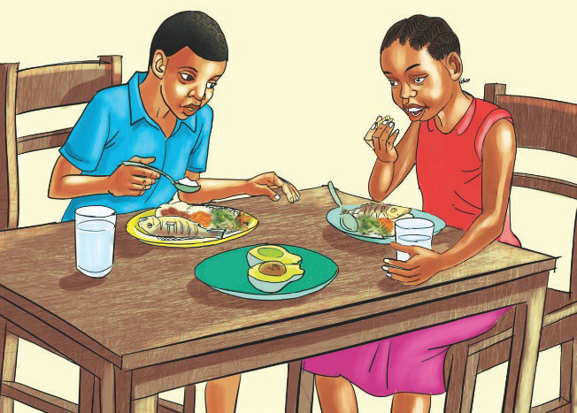

Mambo yanayoweza kuimarisha kinga ya mwili
Kinga ya mwili huweza kuimarika kwa kuzingatia mambo yafuatayo:
Ni muhimu kula vyakula vyenye mchanganyiko unaounda mlo kamili ili kuimarisha kinga ya mwili. Vyakula viwe na mchanganyiko wa vitamini, protini, wanga, mafuta, na madini. Kielelezo namba 3 kinaonesha watoto wakila mlo kamili.

Inatupasa kusafisha mazingira mara kwa mara ili kuimarisha afya na kinga ya mwili. Mazingira safi na salama huzuia wadudu wanaobeba viini vya magonjwa kuzaliana. Pia, huepusha viini vya magonjwa kuingia kwenye chakula au maji, na hivyo kuepusha magonjwa.
Usingizi ni muhimu kwa afya. Unaweza ukakosa usingizi kwa sababu mbalimbali. Hali hiyo ikiendelea kwa muda mrefu husababisha kinga ya mwili kudhoofika. Hivyo, tunashauriwa kulala mahali safi na salama kwa